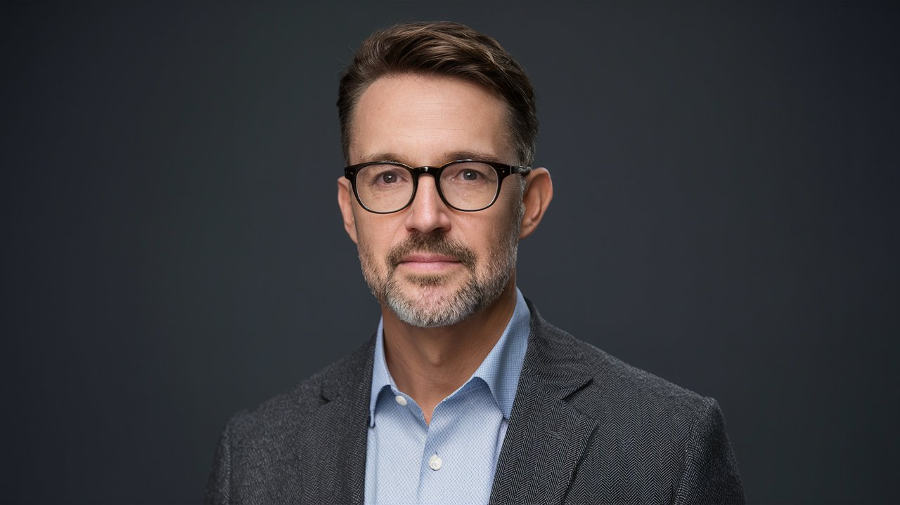
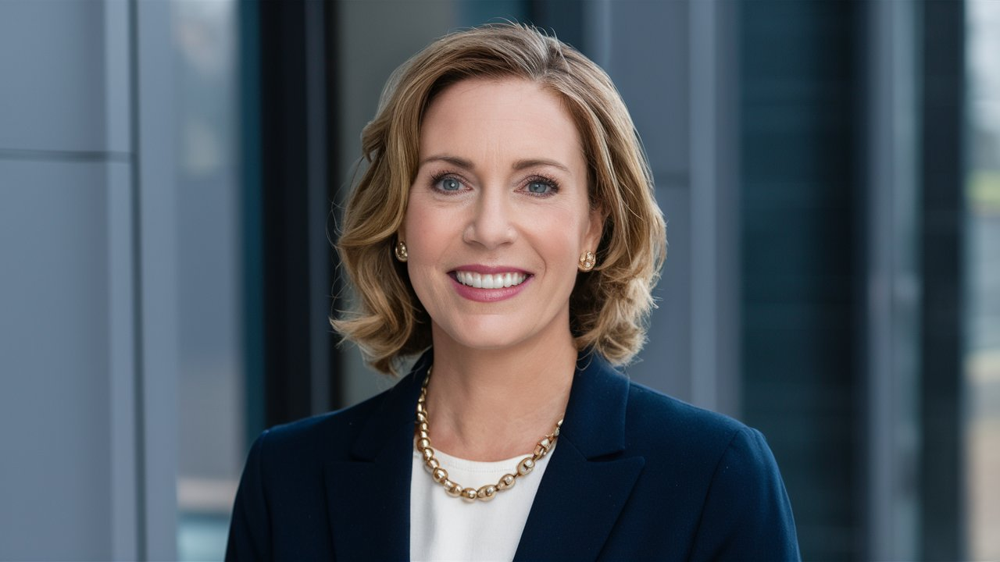

Ahmet Yılmaz
Ahmet Yılmaz, 1971 yılında İstanbul'da doğdu. İstanbul Üniversitesi İletişim Fakültesi'nden mezun olduktan sonra gazetecilik kariyerine Hürriyet gazetesinde başladı. Özellikle siyaset ve ekonomi üzerine yazdığı derinlemesine analizlerle tanınan Yılmaz, son 10 yıldır XYZ Haber bünyesinde çalışıyor. Türkiye'nin değişen sosyoekonomik yapısı üzerine yaptığı araştırmalarla da bilinen Yılmaz, birçok ödüllü makaleye imza atmıştır. Yılmaz, aynı zamanda çeşitli televizyon programlarında da yorumculuk yapmaktadır.
Elif Demir
Elif Demir, 1990 yılında İzmir'de dünyaya geldi. Orta Doğu Teknik Üniversitesi Uluslararası İlişkiler bölümünden mezun olduktan sonra gazeteciliğe adım attı. Kadın hakları, sosyal adalet ve çevre konularında uzmanlaşmış olan Demir, Milliyet gazetesinde başladığı kariyerine XYZ Haber'de köşe yazarı olarak devam ediyor. Yazılarıyla toplumsal bilincin artmasına katkıda bulunan Demir, birçok uluslararası konferansta konuşmacı olarak yer almıştır.
Burak Kaya

1977 doğumlu olan Burak Kaya, gazetecilik kariyerine Sabah gazetesinde başladı. Boğaziçi Üniversitesi'nde Tarih eğitimi aldıktan sonra gazeteciliğe olan ilgisi onu medya sektörüne yönlendirdi. Kaya, özellikle tarihsel perspektif ile güncel olayları yorumlamasıyla tanınıyor. Son 5 yıldır XYZ Haber'de yazan Kaya, aynı zamanda Türkiye'nin siyasal tarihi üzerine yayımlanmış iki kitabın da yazarıdır.
Zeynep Ersoy

1974 yılında Ankara'da doğan Zeynep Ersoy, Bilkent Üniversitesi'nde Siyaset Bilimi okudu. Kariyerine Radikal gazetesinde muhabir olarak başlayan Ersoy, hızla yükselerek kültür ve sanat alanında saygın bir yazar haline geldi. XYZ Haber'deki köşesinde, Türkiye ve dünya genelindeki sanat etkinliklerini, edebiyat dünyasındaki yenilikleri ve kültürel gelişmeleri okuyucularıyla paylaşıyor. Ersoy, aynı zamanda birkaç edebi dergide de editörlük yapmaktadır.
Mehmet Can
Mehmet Can, 1989 yılında Trabzon'da doğdu. Karadeniz Teknik Üniversitesi İletişim Fakültesi'nden mezun olan Can, gazetecilik kariyerine Cumhuriyet gazetesinde adım attı. Sağlık ve bilim alanındaki yazılarıyla dikkat çeken Can, özellikle tıbbi gelişmeler ve toplum sağlığı konularında derinlemesine analizler sunuyor. XYZ Haber'de köşe yazarlığı yapan Mehmet Can, ayrıca düzenli olarak sağlık seminerlerinde konuşmalar yapmaktadır.